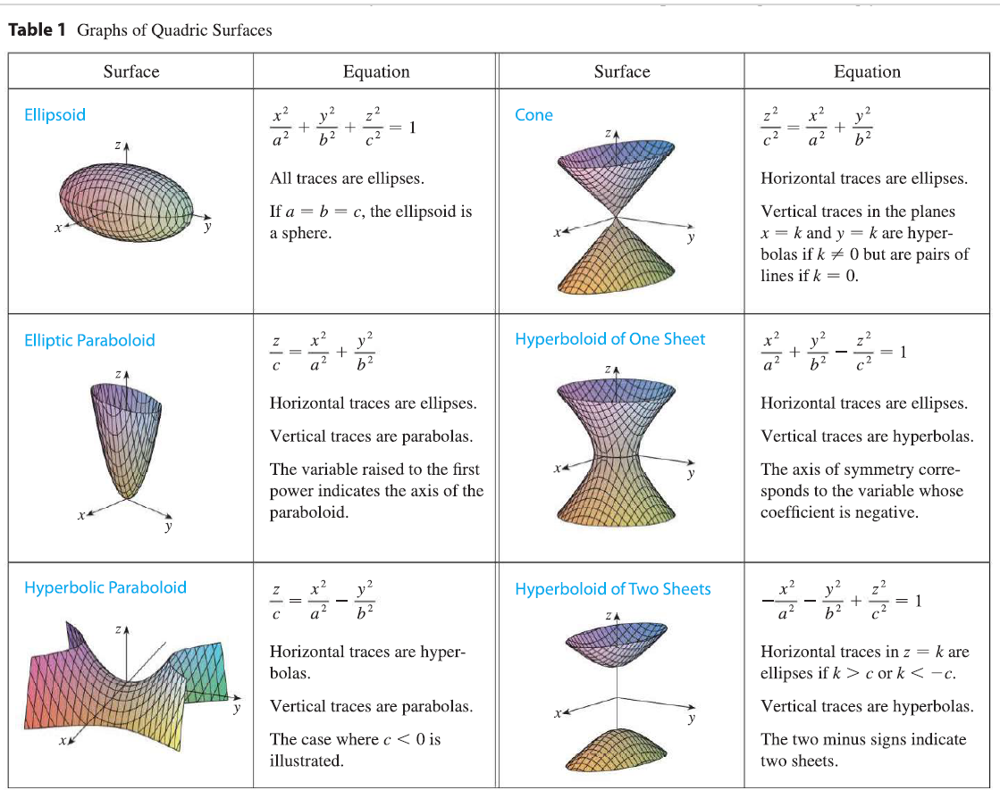
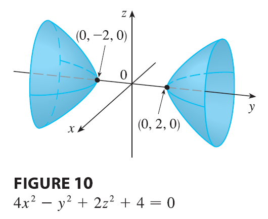

The idea of using traces to draw a surface is employed in
three-dimensional graphing software. In most such software, traces in
the vertical planes \(x = k\) and \(y = k\) are drawn for equally spaced values
of \(k\), and parts of the graph are
eliminated using hidden line removal. Table 1 shows computer-drawn
graphs of the six basic types of quadric surfaces in standard form. All
surfaces are symmetric with respect to the z-axis. If a quadric surface
is symmetric about a different axis, its equation changes
accordingly.

alt text
EXAMPLE 7 Identify and sketch the surface \(4x^2 - y^2 + 2z^2 + 4 = 0\).
SOLUTION Dividing by \(-4\), we first put the equation in standard
form: \[-x^2 + \frac{y^2}{4} - \frac{z^2}{2}
= 1\] Comparing this equation with Table 1, we see that it
represents a hyperboloid of two sheets, the only difference being that
in this case the axis of the hyperboloid is the y-axis. The traces in
the xy- and yz-planes are the hyperbolas \[-x^2 + \frac{y^2}{4} = 1, \quad z=0 \quad
\text{and} \quad \frac{y^2}{4} - \frac{z^2}{2} = 1, \quad x=0\]
The surface has no trace in the xz-plane, but traces in the vertical
planes \(y = k\) for \(|k| > 2\) are the ellipses \[x^2 + \frac{z^2}{2} = \frac{k^2}{4} - 1, \quad
y=k\] which can be written as \[\frac{x^2}{\frac{k^2}{4}-1} +
\frac{z^2}{2(\frac{k^2}{4}-1)} = 1, \quad y=k\] These traces are
used to make the sketch in Figure 10.

alt text
EXAMPLE 8 Classify the quadric surface \(x^2 + 2z^2 - 6x - y + 10 = 0\).
SOLUTION By completing the square we rewrite the
equation as \[y - 1 = (x-3)^2 + 2z^2\]
Comparing this equation with Table 1, we see that it represents an
elliptic paraboloid. Here, however, the axis of the paraboloid is
parallel to the y-axis, and it has been shifted so that its vertex is
the point \((3, 1, 0)\). The traces in
the plane \(y = k\) (\(k > 1\)) are the ellipses \[(x-3)^2 + 2z^2 = k-1, \quad y=k\] The
trace in the xy-plane is the parabola with equation \(y = 1 + (x-3)^2\), \(z=0\). The paraboloid is sketched in Figure
11.